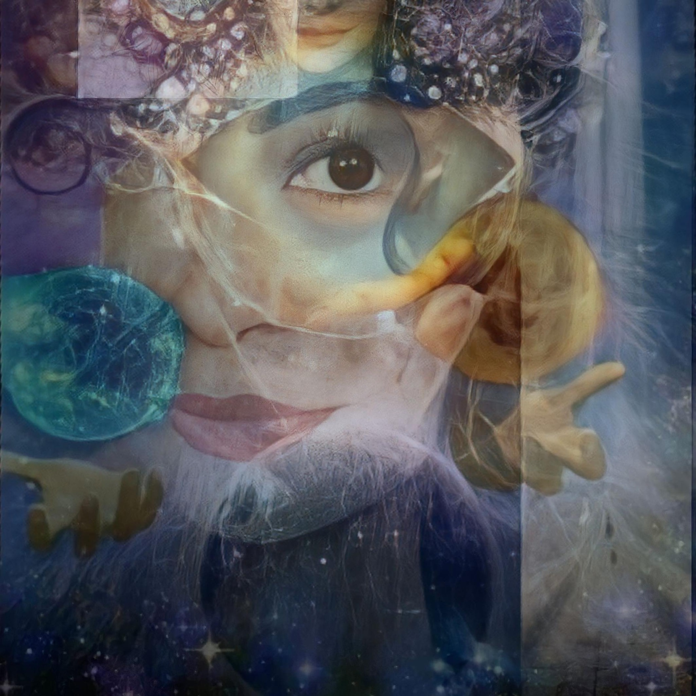

<!doctype html>
<html lang="vi">
  <head>
    <meta charset="UTF-8" />
    <meta name="viewport" content="width=device-width, initial-scale=1.0" />
    <title>RUDY BALDWIN - Psychic Reader and Dream Translator</title>
    <link rel="icon" type="image/png" href="images/favicon.png" />
    <link
      href="https://fonts.googleapis.com/css2?family=Be+Vietnam+Pro:wght@400;600;700&display=swap"
      rel="stylesheet"
    />

    <style>
      * {
        margin: 0;
        padding: 0;
        box-sizing: border-box;
        font-family: "Be Vietnam Pro", sans-serif;
      }
      body {
        background: #0f172a;
        color: #fff;
      }
      .container {
        max-width: 480px;
        margin: auto;
        padding: 16px;
      }
      .chat-box {
        background: #1e293b;
        border-radius: 16px;
        padding: 12px;
        height: 100vh;
        overflow-y: auto;
        margin-top: 16px;
      }
      .msg {
        margin-bottom: 10px;
        padding: 10px 12px;
        border-radius: 12px;
        max-width: 80%;
        font-size: 16px;
        line-height: 1.6;
      }
      .bot {
        background: #334155;
      }
      .user {
        background: #22c55e;
        margin-left: auto;
        color: #000;
      }
      select {
        width: 32%;
        padding: 6px;
        border-radius: 6px;
        border: none;
      }
      .btn {
        width: 100%;
        background: linear-gradient(135deg, #d1180a, #f1716f);
        color: #022c22;
        padding: 10px;
        border-radius: 12px;
        border: none;
        font-weight: 700;
        margin-top: 6px;
        box-shadow: 0 6px 14px rgba(34, 197, 94, 0.4);
        cursor: pointer;
        transition: all 0.2s ease;
      }
      .btn:hover {
        transform: scale(1.03);
        box-shadow: 0 8px 18px rgba(34, 197, 94, 0.5);
      }
      .btn:active {
        transform: scale(0.97);
      }
      @keyframes pulseBtn {
        0% {
          transform: scale(1);
        }
        50% {
          transform: scale(1.05);
        }
        100% {
          transform: scale(1);
        }
      }
      .btn.pulse {
        animation: pulseBtn 1.2s infinite;
      }

      .bot-row {
        display: flex;
        gap: 8px;
        align-items: flex-start;
      }

      .avatar {
        width: 34px;
        height: 34px;
        border-radius: 50%;
        border: 2px solid #f59e0b; /* viền vàng nổi bật */
        box-shadow: 0 0 6px rgba(245, 158, 11, 0.6);
      }

      .avatar {
        animation: pulse 1.5s infinite;
      }

      @keyframes pulse {
        0% {
          box-shadow: 0 0 6px rgba(245, 158, 11, 0.6);
        }
        50% {
          box-shadow: 0 0 12px rgba(245, 158, 11, 1);
        }
        100% {
          box-shadow: 0 0 6px rgba(245, 158, 11, 0.6);
        }
      }

      .bot-name {
        background: rgba(245, 158, 11, 0.1);
        padding: 2px 6px;
        border-radius: 6px;
        display: inline-flex;
        align-items: center;
        gap: 4px;
        font-size: 20px;
        color: #ffffff; /* đỏ nổi bật giống Messenger */
      }

      .bot-text {
        font-size: 16px;
      }

      .online-dot {
        width: 8px;
        height: 8px;
        background: #22c55e;
        border-radius: 50%;
        animation: blink 1.2s infinite;
      }

      @keyframes blink {
        0% {
          opacity: 1;
        }
        50% {
          opacity: 0.3;
        }
        100% {
          opacity: 1;
        }
      }

      .next-btn {
        width: 100%;
        background: linear-gradient(135deg, #f59e0b, #f97316);
        color: #fff;
        padding: 12px;
        border-radius: 14px;
        border: none;
        font-weight: 700;
        font-size: 14px;
        box-shadow: 0 6px 14px rgba(249, 115, 22, 0.4);
        cursor: pointer;
        animation: pulseBtn 1.2s infinite;
      }

      .user-name {
        font-size: 15px;
        font-weight: 700;
        color: #fff;

        background: #ff3b30; /* nền nổi bật */
        padding: 2px 8px;
        border-radius: 6px;

        display: inline-block; /* quan trọng: chỉ ôm chữ */
        margin-bottom: 4px;
      }
      .user-text {
        font-size: 15px;
        color: #ffffff;
        opacity: 0.95;
      }
    </style>
  </head>

  <body>
    <div class="container">
      <div class="chat-box" id="chat"></div>
    </div>

    <script>
      const chat = document.getElementById("chat");

      function randomDelay(min, max) {
        return Math.floor(Math.random() * (max - min) + min);
      }

      // HÀM CHÈN ẢNH
      function sendImage(src, callback) {
        const div = document.createElement("div");
        div.className = "msg bot";

        const img = document.createElement("img");
        img.src = src;
        img.style.maxWidth = "100%";
        img.style.borderRadius = "10px";
        img.style.marginTop = "6px";

        img.onload = () => {
          chat.scrollTo({
            top: chat.scrollHeight,
            behavior: "smooth",
          });
          setTimeout(() => {
            if (callback) callback();
          }, 500);
        };

        div.appendChild(img);
        chat.appendChild(div);
      }

      function showTyping() {
        const div = document.createElement("div");
        div.className = "msg bot";
        div.innerText = "Typing...";
        chat.appendChild(div);
        chat.scrollTo({
          top: chat.scrollHeight,
          behavior: "smooth",
        });
        return div;
      }

      function typeMessage(text, type, callback) {
        const typingDiv = showTyping();

        setTimeout(
          () => {
            typingDiv.remove();

            const div = document.createElement("div");
            div.className = "msg " + type;
            if (type === "bot") {
              div.innerHTML = `
                <div class="bot-row">
                  
                  <div>
                    <div class="bot-name">Rudy Baldwin <span class="online-dot"></span></div>
                    <div class="bot-text"></div>
                  </div>
                </div>
              `;
            }
            chat.appendChild(div);

            let i = 0;
            function typing() {
              if (i < text.length) {
                // 👇 FIX xử lý <br>
                if (text.substring(i, i + 4) === "<br>") {
                  if (type === "bot") {
                    div.querySelector(".bot-text").innerHTML += "<br>";
                  } else {
                    div.innerHTML += "<br>";
                  }
                  i += 4;
                } else {
                  if (type === "bot") {
                    div.querySelector(".bot-text").innerHTML += text.charAt(i);
                  } else {
                    div.innerHTML += text.charAt(i);
                  }
                  i++;
                }

                chat.scrollTo({
                  top: chat.scrollHeight,
                  behavior: "smooth",
                });

                setTimeout(typing, 30);
              } else {
                chat.scrollTo({
                  top: chat.scrollHeight,
                  behavior: "smooth",
                });
                if (callback) callback();
              }
            }
            typing();
          },
          randomDelay(800, 1500),
        );
      }

      // ✅ CHỈ SỬA PHẦN HIỂN THỊ DOB (đưa vào chat)
      function showDOB() {
        const div = document.createElement("div");
        div.className = "msg user";
        div.id = "dobForm";

        div.innerHTML = `
                      <div style="display:flex; gap:4px; margin-bottom:6px;">
                        <select id="day"></select>
                        <select id="month"></select>
                        <select id="year"></select>
                      </div>
                      <button onclick="submitDOB()" class="btn pulse">Xác nhận</button>
                    `;

        chat.appendChild(div);
        chat.scrollTo({
          top: chat.scrollHeight,
          behavior: "smooth",
        });

        initSelect();
      }

      function initSelect() {
        const day = document.getElementById("day");
        const month = document.getElementById("month");
        const year = document.getElementById("year");

        if (day.options.length > 0) return;

        for (let i = 1; i <= 31; i++) {
          day.innerHTML += `<option value="${i}">${i}</option>`;
        }

        const months = [
          "January",
          "February",
          "March",
          "April",
          "May",
          "June",
          "July",
          "August",
          "September",
          "October",
          "November",
          "December",
        ];

        for (let i = 1; i <= 12; i++) {
          month.innerHTML += `<option value="${i}">${months[i - 1]}</option>`;
        }

        for (let i = 1950; i <= 2005; i++) {
          year.innerHTML += `<option value="${i}">${i}</option>`;
        }
      }

      function submitDOB() {
        const d = parseInt(document.getElementById("day").value);
        const m = parseInt(document.getElementById("month").value);
        const y = parseInt(document.getElementById("year").value);

        const userDiv = document.createElement("div");
        userDiv.className = "msg user";
        userDiv.innerHTML = `
              <div class="user-row">
                <div class="user-bubble">
                  <div class="user-name">${userName}</div>
                 <div class="user-text">Ang aking petsa ng kapanganakan ay: <strong>${d}/${m}/${y}</strong></div>
                </div>
              </div>
            `;

        chat.appendChild(userDiv);

        // ✅ xoá đúng form DOB
        const form = document.getElementById("dobForm");
        if (form) form.remove();

        chat.scrollTo({
          top: chat.scrollHeight,
          behavior: "smooth",
        });

        // Hàm CUNG HOÀNG ĐẠO
        function getZodiac(d, m) {
          if ((d >= 21 && m == 3) || (d <= 19 && m == 4)) return "Aries";
          if ((d >= 20 && m == 4) || (d <= 20 && m == 5)) return "Taurus";
          if ((d >= 21 && m == 5) || (d <= 20 && m == 6)) return "Gemini";
          if ((d >= 21 && m == 6) || (d <= 22 && m == 7)) return "Cancer";
          if ((d >= 23 && m == 7) || (d <= 22 && m == 8)) return "Leo";
          if ((d >= 23 && m == 8) || (d <= 22 && m == 9)) return "Virgo";
          if ((d >= 23 && m == 9) || (d <= 22 && m == 10)) return "Libra";
          if ((d >= 23 && m == 10) || (d <= 21 && m == 11)) return "Scorpio";
          if ((d >= 22 && m == 11) || (d <= 21 && m == 12))
            return "Sagittarius";
          if ((d >= 22 && m == 12) || (d <= 19 && m == 1)) return "Capricorn";
          if ((d >= 20 && m == 1) || (d <= 18 && m == 2)) return "Aquarius";
          return "Pisces";
        }

        // HÀM CON GIÁP
        function getChineseZodiac(year) {
          const animals = [
            "Monkey",
            "Rooster",
            "Dog",
            "Pig",
            "Rat",
            "Ox",
            "Tiger",
            "Rabbit",
            "Dragon",
            "Snake",
            "Horse",
            "Goat",
          ];
          return animals[year % 12];
        }

        // Gán Ảnh vào Cung hoàng đạo
        const zodiacImageMap = {
          Aries: "images/zodiac-1.jpg",
          Taurus: "images/zodiac-2.jpg",
          Gemini: "images/zodiac-3.jpg",
          Cancer: "images/zodiac-4.jpg",
          Leo: "images/zodiac-5.jpg",
          Virgo: "images/zodiac-6.jpg",
          Libra: "images/zodiac-7.jpg",
          Scorpio: "images/zodiac-8.jpg",
          Sagittarius: "images/zodiac-9.jpg",
          Capricorn: "images/zodiac-10.jpg",
          Aquarius: "images/zodiac-11.jpg",
          Pisces: "images/zodiac-12.jpg",
        };

        const animalImageMap = {
          Rat: "images/animal-1.jpg",
          Ox: "images/animal-2.jpg",
          Tiger: "images/animal-3.jpg",
          Rabbit: "images/animal-4.jpg",
          Dragon: "images/animal-5.jpg",
          Snake: "images/animal-6.jpg",
          Horse: "images/animal-7.jpg",
          Goat: "images/animal-8.jpg",
          Monkey: "images/animal-9.jpg",
          Rooster: "images/animal-10.jpg",
          Dog: "images/animal-11.jpg",
          Pig: "images/animal-12.jpg",
        };

        // Gán Nội dung theo Cung hoàng đạo
        const zodiacContentMap = {
          Aries:
            "Ang Aries 🔥 ay nasa isang malakas na turning point sa pananalapi. Marami ka nang ginawa ngunit hindi pa tama ang direksyon kaya naaapektuhan ang daloy ng pera 💸. Ang mga padalus-dalos na desisyon noon ay nagdudulot ngayon ng pressure ⚠️. Ngunit ang tapang mo ang magiging susi para baguhin ang iyong kapalaran. Kung pipili ka nang tama, posible ang malaking financial breakthrough sa lalong madaling panahon 💰.",
          Taurus:
            "Ang Taurus 🌿 ay nasa estado ng stagnation sa pananalapi—parang walang galaw kahit anong effort ang gawin mo. Mahilig kang kumapit sa kung anong meron ka, ngunit dahil dito nawawala ang mga oportunidad ⏳. Unti-unting tumitindi ang pressure sa pera 💵. Kung hindi ka magbabago ng mindset at lalabas sa comfort zone, mananatiling limitado ang iyong financial future.",
          Gemini:
            "Ang Gemini 💬 ay nagkakalat ng enerhiya sa napakaraming direksyon pagdating sa pera. Marami kang sinusubukan pero hindi tinatapos, kaya hindi nagiging maayos ang resulta. May mga oportunidad na dumaan ngunit hindi mo nasulit 🚪. Ngayon ang panahon para mag-focus kung ayaw mong manatili sa financial instability.",
          Cancer:
            "Ang Cancer 💖 ay dumaranas ng financial pressure dahil sa emosyon at responsibilidad. Marami kang isinakripisyo para sa iba at nakalimutan mo ang sarili 😔. Dahil dito, nawawala ang balanse sa pera. Ngunit may paparating na oportunidad ✨—kung matututo kang magtakda ng hangganan, makakabawi ka.",
          Leo: "Ang Leo 👑 ay humaharap sa malaking hamon sa pananalapi 💸. Mataas ang ambisyon mo ngunit hindi pa tumutugma ang resulta. May mga maling desisyong pumipigil sa iyong pag-angat. Ang pressure sa gastos at imahe ang nagpapahirap sa kontrol ng pera. Ngunit kung maaayos mo ang strategy, kaya mong baguhin ang sitwasyon 🔥.",
          Virgo:
            "Ang Virgo 🧠 ay natatali sa pagiging perpekto, kaya maraming oportunidad ang naaantala ⏳. Masyado kang nag-aanalisa at kulang sa aksyon. Dahil dito, hindi lumalago ang iyong kita. Kung hindi ka kikilos, mananatili ka sa “stable pero walang growth” na sitwasyon.",
          Libra:
            "Ang Libra ⚖️ ay nasa pagitan ng maraming financial choices ngunit hirap magdesisyon. Dahil sa pag-aalinlangan, nawawala ang tamang timing ⌛. Naghahanap ka ng balanse pero hindi ka handang mag-risk. Kung hindi ka magbabago, mananatili kang naka-stuck sa parehong cycle.",
          Scorpio:
            "Ang Scorpio 🦂 ay nasa gitna ng matinding pagbabago sa pananalapi 💥. Ang mga bagay na itinayo mo ay maaaring nagbabago o nawawala. Ngunit hindi ito katapusan—ito ay pagkakataon para sa rebirth 🔄. Kung bibitawan mo ang nakaraan, magbubukas ang bagong financial path.",
          Sagittarius:
            "Ang Sagittarius 🌍 ay may tendensiyang gumastos nang padalos-dalos 💸. Mahilig ka sa kalayaan kaya minsan nawawala ang kontrol sa pera. Ngayon ang panahon para maging disiplinado ⚠️. Kung hindi, maaaring mas lumaki ang financial pressure sa hinaharap.",
          Capricorn:
            "Ang Capricorn 🏔️ ay may mabigat na financial burden 💼. Masipag ka ngunit hindi pa nakikita ang resulta ng iyong effort 😓. Dahil dito, pakiramdam mo ay naiipit ka. Ngunit kung magpapatuloy ka at mag-aadjust ng strategy, darating ang panahon ng malaking pag-angat 📈.",
          Aquarius:
            "Ang Aquarius ⚡ ay maraming ideya ngunit kulang sa practical execution 💡. Nauuna ka sa panahon ngunit hindi mo pa ito nagagawang pagkakitaan. Kaya pakiramdam mo ay may potensyal pero walang resulta. Kapag nahanap mo ang tamang direksyon, mabilis magbabago ang lahat 🚀.",
          Pisces:
            "Ang Pisces 🌊 ay nasa pinakamababang punto ng financial luck 😔. Marami kang isinuko at tahimik na dinadala ang pressure ng utang 💸. Dahil sa emosyon, nahihirapan kang magdesisyon nang tama. Ngunit ito rin ang simula ng pagbabago ✨. Kung pipili ka ng tamang landas, posible ang isang malaking financial breakthrough sa lalong madaling panahon 💰🔥.",
        };
        const animalContentMap = {
          Rat: "Ang iyong Chinese zodiac ay Rat 🐭. Ibig sabihin nito, ngayong buwan ay may posibilidad na magbago nang positibo ang iyong buhay kung marunong kang samantalahin ang mga oportunidad at baguhin ang direksyon. Ito ang tamang panahon para baguhin ang iyong kapalaran sa 2026 ✨. Ngunit kung magdadalawang-isip ka at palampasin ito, mananatili ka sa siklo ng kahirapan sa pananalapi 💸.",
          Ox: "Ang iyong Chinese zodiac ay Ox 🐂. Ibig sabihin nito, sa buwang ito maaaring magkaroon ng malaking positibong pagbabago sa iyong buhay kung marunong kang baguhin ang takbo ng iyong kapalaran. Ito ang pagkakataon para baguhin ang iyong tadhana sa 2026 💫. Ngunit kung palalampasin mo ito, magpapatuloy ang hirap sa iyong buhay.",
          Tiger:
            "Ang iyong Chinese zodiac ay Tiger 🐅. Ipinapakita nito na ikaw ay nasa isang malaking turning point sa iyong buhay. Kung magiging matapang ka sa pagbabago, magsisimulang dumating ang suwerte 🍀. Ito ay isang bihirang pagkakataon para mapabuti ang iyong pananalapi sa 2026. Kung hindi mo ito gagamitin, mas maraming hamon ang darating.",
          Rabbit:
            "Ang iyong Chinese zodiac ay Rabbit 🐇. Ipinapakita nito na kailangan mong gumawa ng pagbabago upang makamit ang stability. Kung lalabas ka sa iyong comfort zone, magsisimulang gumanda ang iyong buhay 🌸. Ito ang tamang panahon para baguhin ang iyong kapalaran sa 2026. Kung hindi, mananatili ka sa kasalukuyang sitwasyon.",
          Dragon:
            "Ang iyong Chinese zodiac ay Dragon 🐉. Ipinapakita nito na may malakas kang potensyal para sa financial breakthrough. Ngunit kailangan mong kumilos sa tamang oras ⚡. Ito ay isang makapangyarihang oportunidad para baguhin ang iyong kapalaran sa 2026. Kung palalampasin mo ito, matagal bago muling dumating ang ganitong pagkakataon.",
          Snake:
            "Ang iyong Chinese zodiac ay Snake 🐍. Ipinapakita nito na kailangan mo ng matalinong diskarte sa mga susunod na araw. Kung tama ang iyong mga desisyon, maaari mong mapabuti ang iyong buhay 💡. Ito ang pagkakataon para baguhin ang iyong kapalaran sa 2026. Kung hindi mo ito gagamitin, mananatili ang mga problema.",
          Horse:
            "Ang iyong Chinese zodiac ay Horse 🐎. Ipinapakita nito na kailangan mong kontrolin ang iyong direksyon. Kung marunong kang huminto at mag-adjust, babalik ang suwerte 🌟. Ito ay isang mahalagang pagkakataon sa 2026. Kung palalampasin mo ito, magpapatuloy ang pressure sa iyong buhay.",
          Goat: "Ang iyong Chinese zodiac ay Goat 🐐. Ipinapakita nito na kailangan mo ng malaking pagbabago upang makaalis sa kasalukuyang sitwasyon. Kung magiging determinado ka, makikita mo ang pagbuti ng iyong buhay 🌿. Ito ang pagkakataon para baguhin ang iyong kapalaran sa 2026. Kung hindi, walang magiging malaking pagbabago.",
          Monkey:
            "Ang iyong Chinese zodiac ay Monkey 🐒. Ipinapakita nito na may kakayahan kang umangkop at samantalahin ang mga oportunidad. Kung magfo-focus ka, maaari kang magkaroon ng malaking breakthrough 🚀. Ito ay isang mahalagang pagkakataon sa 2026. Kung palalampasin mo ito, kailangan mong magsimula muli.",
          Rooster:
            "Ang iyong Chinese zodiac ay Rooster 🐓. Ipinapakita nito na kailangan mong maging mas disiplinado at desidido. Kung kikilos ka nang may kumpiyansa, magbabago ang iyong buhay sa positibong paraan 🔥. Ito ang pagkakataon para baguhin ang iyong kapalaran sa 2026. Kung hindi, magpapatuloy ang mga hadlang.",
          Dog: "Ang iyong Chinese zodiac ay Dog 🐕. Ipinapakita nito na malapit ka na sa isang mahalagang pagbabago. Kung maniniwala ka sa sarili mo at kikilos, makikita mo ang malinaw na resulta 💖. Ito ang pagkakataon para mapabuti ang iyong kapalaran sa 2026. Kung palalampasin mo ito, maghihintay ka muli ng matagal.",
          Pig: "Ang iyong Chinese zodiac ay Pig 🐖. Ipinapakita nito na may oportunidad kang magkaroon ng stability at growth. Kung gagamitin mo ito, unti-unting gaganda ang iyong buhay 🌈. Ito ang tamang panahon para baguhin ang iyong kapalaran sa 2026. Kung hindi, mananatili ka sa ligtas pero walang progreso na sitwasyon.",
        };
        // ⚠️ GIỮ NGUYÊN FLOW
        const zodiac = getZodiac(d, m);
        const animal = getChineseZodiac(y);

        typeMessage(
          "Okay... Gumagawa ako ng horoscope reading para sa iyo...",
          "bot",
          () => {
            setTimeout(
              () => {
                typeMessage(`Your zodiac sign is ${zodiac}`, "bot", () => {
                  sendImage(zodiacImageMap[zodiac], () => {
                    typeMessage(zodiacContentMap[zodiac], "bot", () => {
                      typeMessage(`Chinese zodiac: ${animal}`, "bot", () => {
                        sendImage(animalImageMap[animal], () => {
                          typeMessage(animalContentMap[animal], "bot", () => {
                            typeMessage(
                              "Tutulungan kita na makaakit ng pera at swerte gamit ng iyong horoscope ngayong taong 2026. Kung sumasang-ayon ka, makakalinutan mo ito habang buhay kung ano ang maging mahirap. Papalayain ko ang iyong swerte mula sa pagkabihag.👇",
                              "bot",
                              () => {
                                typeMessage(
                                  "🎁 Bibilhan kita ng kwintas mula sa Thailand 🇹🇭!<br>Ito ay may kapangyarihang aakit ng kayamanan 💰✨, magtataboy ng negatibong enerhiya 🧿, at magdadala ng swerte sa iyong buhay 🍀.",
                                  "bot",
                                  () => {
                                    setTimeout(() => {
                                      typeMessage(
                                        "✨ Muli mong paikutin ang Wheel of Destiny upang matiyak na ikaw ang pinili ng kapalaran na yumaman.",
                                        "bot",
                                        () => {
                                          setTimeout(() => {
                                            showNextButton();
                                          }, 800);
                                        },
                                      );
                                    }, 800);
                                  },
                                );
                              },
                            );
                          });
                        });
                      });
                    });
                  });
                });
              },
              randomDelay(1000, 2000),
            );
          },
        );
      }

      function randomNumber() {
        let a = Math.floor(Math.random() * 43); // 0–42
        let b;

        do {
          b = Math.floor(Math.random() * 43);
        } while (b === a); // đảm bảo khác nhau

        return `👉 ${a.toString().padStart(2, "0")} - ${b.toString().padStart(2, "0")}`;
      }

      const userName =
        new URLSearchParams(window.location.search).get("name") || "bạn";
      const userGender =
        new URLSearchParams(window.location.search).get("gender") || "other";

      function getPronoun() {
        if (userGender === "male") return "Mr";
        if (userGender === "female") return "Mrs";
        return "You";
      }

      function showNextButton() {
        const div = document.createElement("div");
        div.className = "msg user";

        div.innerHTML = `
                <button class="next-btn" onclick="goNext()">
                  Paikutin Ngayon ang Kapalaran 👉
                </button>
              `;

        chat.appendChild(div);
        chat.scrollTo({
          top: chat.scrollHeight,
          behavior: "smooth",
        });
      }

      function goNext() {
        const name = userName; // biến bạn đang dùng

        const url = `https://tycheros.fengshuiph.click/spin?name=${encodeURIComponent(name)}`;

        window.location.href = url;
      }

      function startChat() {
        typeMessage(
          `Hello ${getPronoun()} ${userName} 👋 <br> Ako si Rudy Baldwin. Isang Physic reader at Astrologo.`,
          "bot",
          () => {
            typeMessage(
              "Ngayong Mayo, 3 zodiac signs ang makakaranas ng life-changing luck, at 2 zodiac signs ang makakaharap sa kamalasan. <br> Alin ang magiging...? 🤖",
              "bot",
              () => {
                typeMessage(
                  "Hayaan mong basahin ko ang iyong horoscope. 🎯 <br> Una, mangyaring sabihin sa akin ang iyong petsa ng kapanganakan.",
                  "bot",
                  () => {
                    showDOB();
                  },
                );
              },
            );
          },
        );
      }

      setTimeout(startChat, 800);
    </script>
  </body>
</html>
